News & Events
Latest updates from the Industrial AI Group
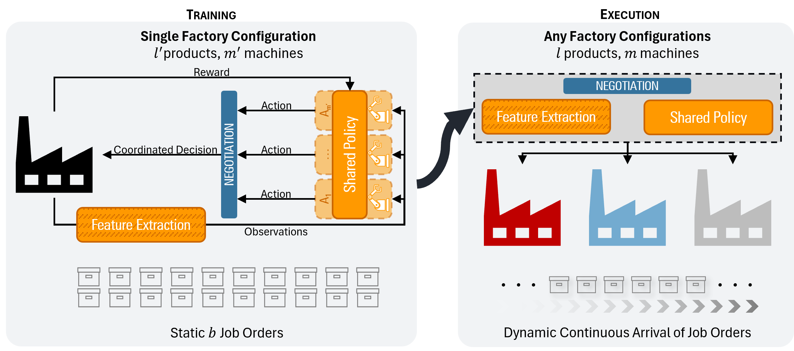
Dazzle Johnson's Continuous Dynamic Flexible Job Shop Scheduling Research Published in IEEE Transactions on Automation Science and Engineering
Dazzle Johnson's PhD research on multi-agent continuous decision-making for dynamic flexible job shop scheduling has been accepted for publication in IEEE Transactions on Automation Science and Engineering.
Read more →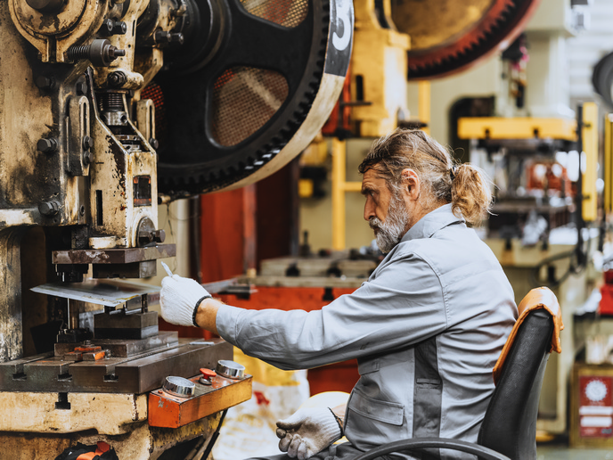
EU Horizon Feature — Robots, Smart Tech, and Ageing Workforces
Our team is grateful to contribute to global efforts rethinking work for an ageing Europe, as featured in a recent EU Horizon CORDIS article on the MAIA project.
Read more →Fully Funded PhD Scholarship — Machine Intelligence towards Collaborative Factory Automation
A fully funded PhD scholarship is available in the Industrial AI Research Group, focusing on developing intelligent, collaborative automation systems for the factories of the future.
Read more →Fully Funded PhD Scholarship — Robot Skill Learning
A fully funded PhD scholarship is available in the Industrial AI Research Group, focusing on developing robot skill learning techniques.
Read more →Seminar — Dr. Seyyed Ehsan Hashemi-Petroodi
Delighted to have Dr. Seyyed Ehsan Hashemi-Petroodi share his inspiring insights on robust optimization and assembly line reconfiguration.
Read more →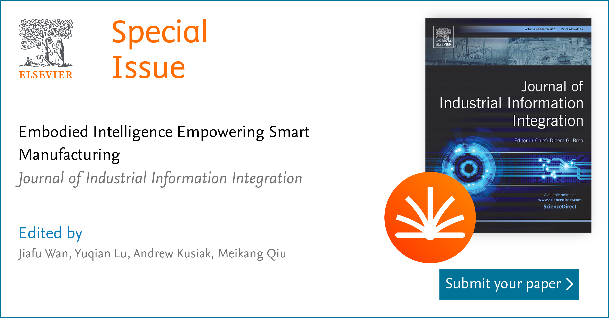
Call for Papers — Embodied Intelligence Empowering Smart Manufacturing
Special Issue for Embodied Intelligence Empowering Smart Manufacturing at Journal of Industrial Information Integration.
Read more →
Strategic Workshop on Future of Human-Robot Collaboration
A diverse group of stakeholders gathered for a successful workshop to discuss future aspirations and development pathways for human-robot collaboration technologies.
Read more →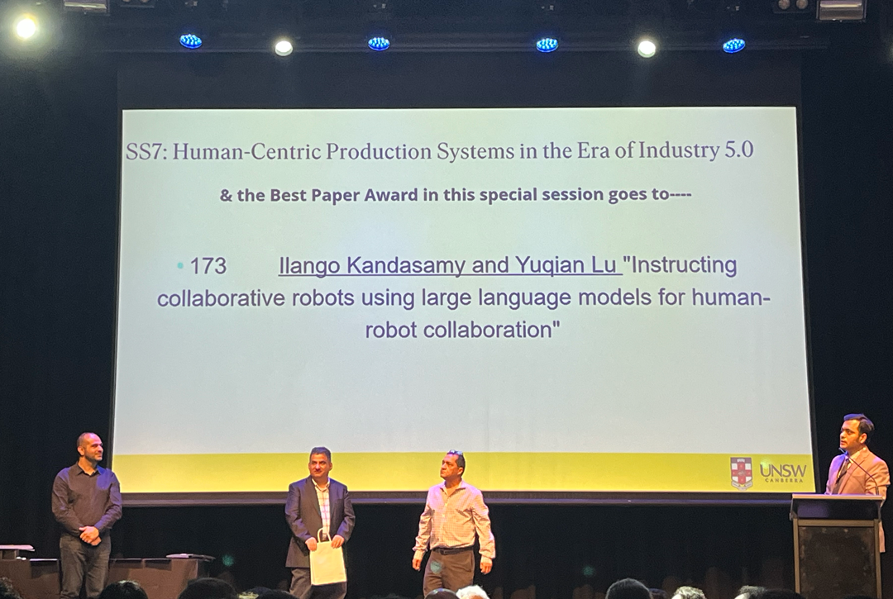
Best Paper Award at CIE51, 2024
Ilango Kandasamy and Yuqian Lu won the Best Paper Award at the 51st International Conference on Computers and Industrial Engineering for their work on using Large Language Models for human-robot collaboration.
Read more →We are Hiring — PhD Scholarships & Postdoc on Human-Robot Collaboration (MBIE Endeavour Fund)
The IAI Research Group has secured $1 million NZD from the MBIE Endeavour Fund for "Ultra-flexible human-robot collaborative product assembly," with two PhD positions and one postdoctoral fellowship available.
Read more →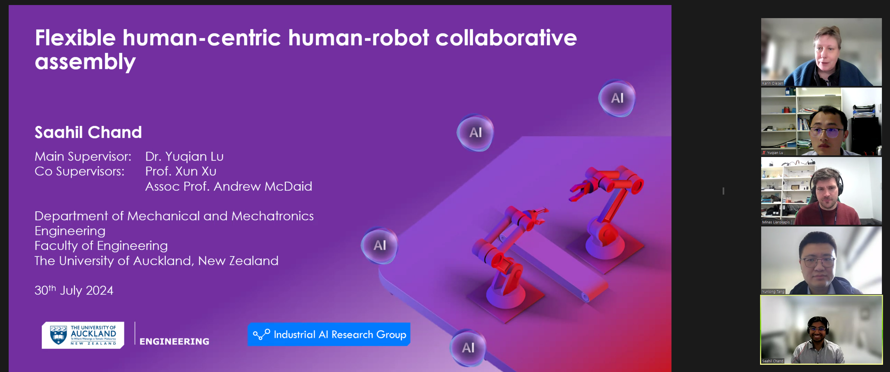
Dr. Saahil Chand — Dean of Graduate Studies List
Dr. Saahil Chand has been placed on the University of Auckland Dean of Graduate Studies List in recognition of excellence achieved in his PhD thesis, an honour awarded to only a few doctoral graduates each year.
Read more →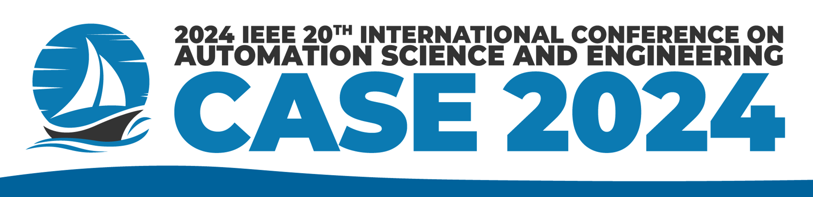
IAI Research Group at CASE 2024
The Industrial AI Research Group attended the 20th IEEE CASE conference in Bari, Italy, presenting three papers on multi-agent scheduling, assembly action recognition, and an AI-powered assembly assistive system.
Read more →Blending Cutting-Edge Science and Commercial Potential
A repost of Dr. Yuqian Lu's interview with SfTI National Science Challenge on combining 5G, AI, and robotics for cloud-controlled industrial systems, and his journey from industry back to academia.
Read more →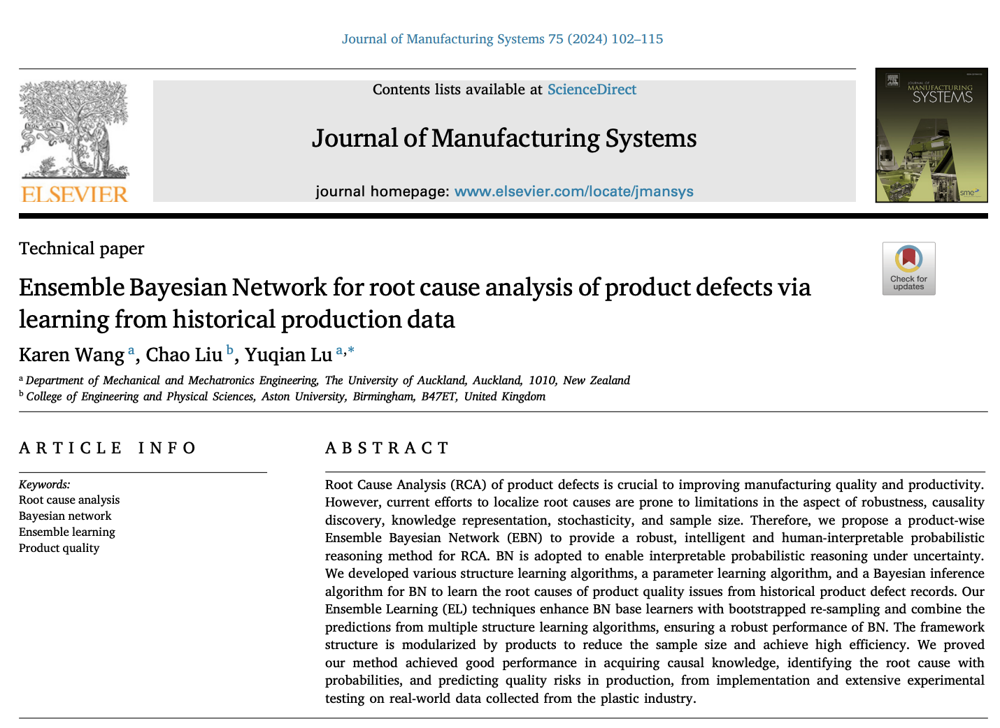
Groundbreaking Research in Manufacturing Quality Control from Karen Wang
Master's student Karen Wang developed the product-wise Ensemble Bayesian Network (EBN) for root cause analysis of manufacturing defects, demonstrating improved quality risk prediction in the plastics industry in collaboration with AspectPT Ltd.
Read more →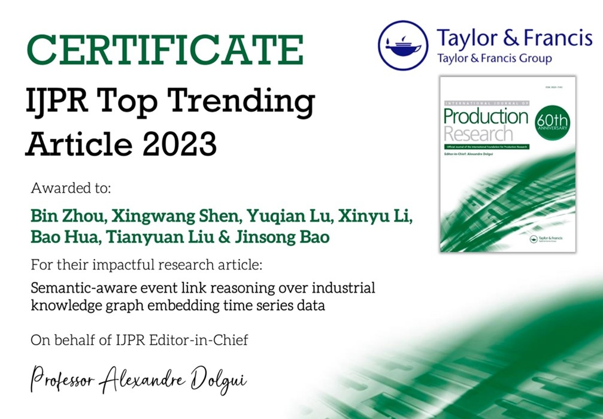
IJPR Top Trending Article on Industrial Knowledge Graph
A paper by Dr. Bin Zhou and Prof. Jinsong Bao on machine learning for industrial time series knowledge extraction was recognised as a Top Trending Article for 2023 in the International Journal of Production Research.
Read more →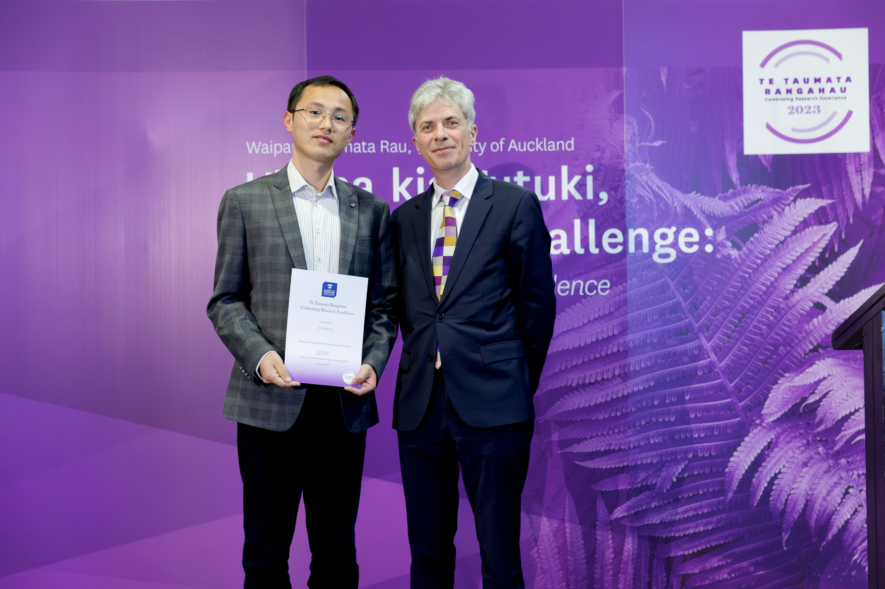
Dr. Yuqian Lu Awarded the 2023 UoA Early Career Research Excellence Award
Dr. Yuqian Lu was recognised as one of seven recipients of the Early Career Research Excellence Award at the University of Auckland's 2023 Celebrating Research Excellence event.
Read more →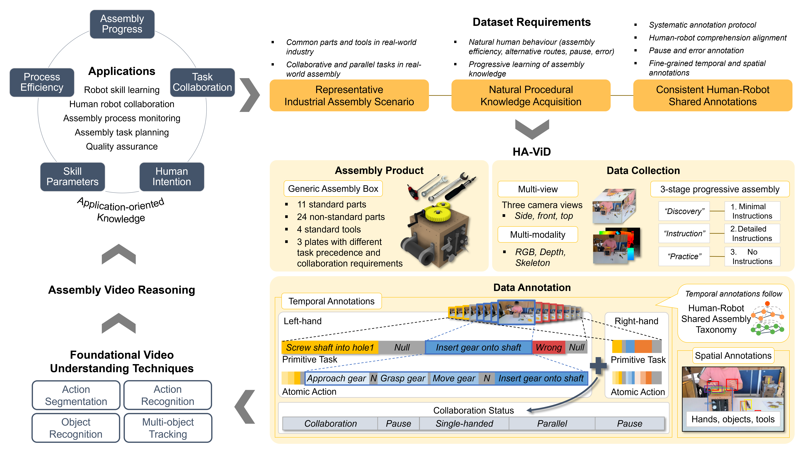
HA-ViD Paper Accepted at NeurIPS 2023
The paper "HA-ViD: A Human Assembly Video Dataset for Comprehensive Assembly Knowledge Understanding" was accepted at NeurIPS 2023, providing a large-scale benchmark for human-robot collaboration and robot skill learning.
Read more →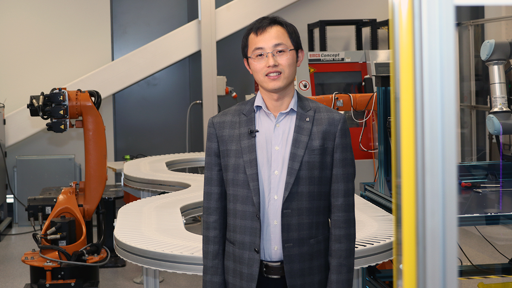
Yuqian Lu on 1News about AI, Robots and 5G
Dr. Yuqian Lu was interviewed by 1News about how 5G-enabled environments can accelerate industrial productivity through AI and robotics, and how 5G could enable real-time cloud-based robot control.
Read more →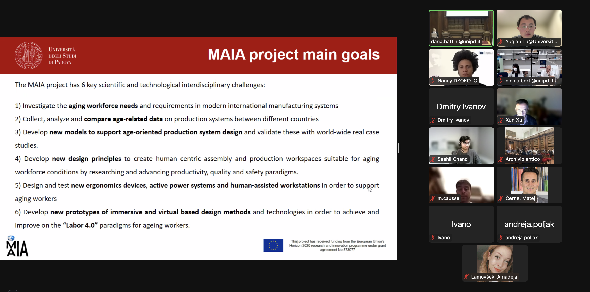
EU Horizon 2020 MAIA Project Mid-term Meeting
Dr. Yuqian Lu presented research progress at the MAIA project mid-term meeting, discussing human-centric manufacturing, worker well-being, and human-robot collaboration outcomes in partnership with the University of Padova.
Read more →Wesley Teh Speaks at TEDxYouth
Wesley Teh, a 14-year-old student mentored by Dr. Yuqian Lu, presented his "Omnitronics" concept at TEDxYouth@StCuthbertsCollege — a cybernetic platform integrating robotics, drones, AI, and self-driving cars.
Read more →Dr. Yuqian Lu Nominated as a Corresponding Expert of Engineering, Elsevier
Dr. Yuqian Lu was nominated as a Corresponding Expert of Engineering by The Chinese Academy of Engineering in December 2022. Engineering is a top-ranked journal with an Impact Factor of 12.8.
Read more →Visit from Professor Olga Battaïa
Professor Olga Battaïa, Associate Dean for Research at KEDGE Business School, France, visited the IAI team on November 28, 2022 for in-depth discussions under the EU MAIA project on active ageing workforce.
Read more →Visit from Professor Qiang Huang
Professor Qiang Huang from USC's Epstein Department of Industrial and Systems Engineering visited the Industrial AI Group on December 2, 2022 and delivered a seminar on engineering-informed machine learning for additive manufacturing accuracy control.
Read more →Lab Visit from Christopher Luxon, Leader of the National Party
On October 17, 2022, Christopher Luxon, Leader of the New Zealand National Party, visited the IAI team to view research outcomes and their impact for New Zealand.
Read more →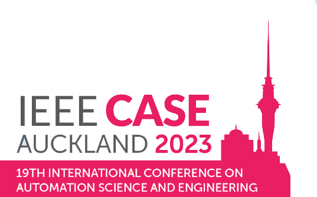
We are Hosting the 2023 IEEE CASE Conference in Auckland
The 19th IEEE International Conference on Automation Science and Engineering (CASE 2023), themed "Automation for a Resilient Society," will be hosted in Auckland, New Zealand on August 26–29, 2023.
Read more →MBIE Endeavour Fund: $10.3 Million Investment to Transform Construction
The HERA-led Construction 4.0 programme secured $10.3 million from the MBIE Endeavour Fund. The IAI Research Team will deliver construction automation and digitalisation solutions as part of this four-year project.
Read more →A Mobile Manipulator to Help Workers on the Factory Floor
Dr. Yuqian Lu is developing an intelligent autonomous mobile robot at the University of Auckland that can work alongside human operators in small New Zealand manufacturing environments, enabling flexible human-robot collaboration.
Read more →RCIM Best Paper Award
Dr. Yuqian Lu received the Robotics and Computer-Integrated Manufacturing (RCIM) Best Paper Award for his first-authored article on Digital Twin-driven smart manufacturing, which recorded the highest number of Scopus citations over the past five years.
Read more →2021 Science for Technological Innovation (SfTI) National Science Challenge Grant
The Industrial AI Team received a two-year SfTI seed grant for "Ultra-reliable time-sensitive industrial control in the cloud," developing 5G scheduling algorithms for cloud-controlled industrial robotics in collaboration with VUW, Spark, and Nokia.
Read more →